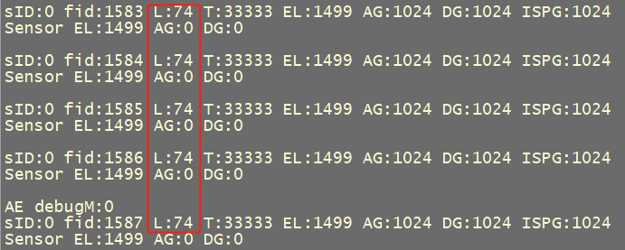
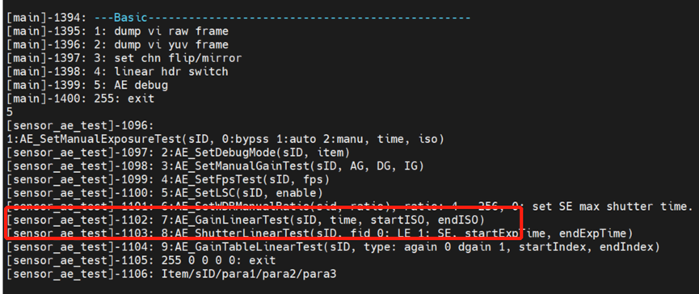
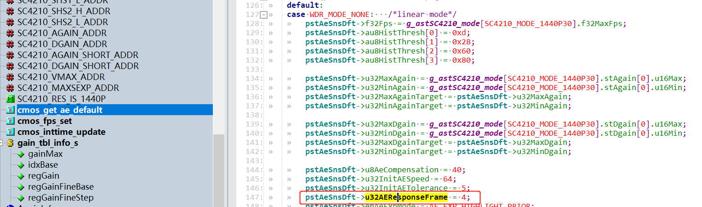
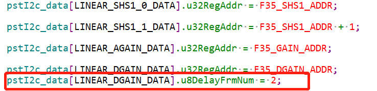
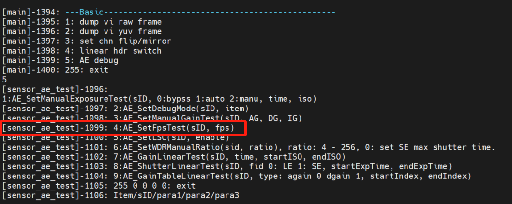
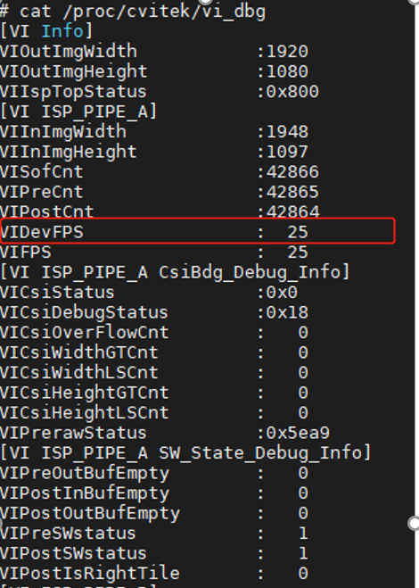

10. AE相关验证¶
当完成图像验证后就可以进行AE交接工作，AE交接要确保基本的曝光、增益是线性的，还有反应帧、同步问题等需要验证。
主要是完成SensorPorting_AE(sensor_test)这份表格的验证。验证工作需要用到灯箱和sensor_test测试程序。
注意：在进行AE相关验证时，需要将之前注释的代码给放开。
10.1. BLC确认和验证¶
sensor spec上一般都会写blc offset的值，可直接写入xxx_cmos_param.h。
如果没有可通过以下方式测试得出实际blc值：
修改xxx_cmos_param.h，将下面红色圈出的部分，273表示blc offset, 全部改为0。

遮住镜头，在纯黑环境下运行sensor_test，输入CMD
5
2 0 70 0 0
打印出Luma值再乘4就是对应的blc offset值。
比如下面对应的blc offset为74x4=286。
{kind=link}

最后将测试出来的blc offset代入公式gain = 4095/（4095 - offset）*1024 得到 1106， 将确认好的blc和gain填入xxx_cmos_param.h。
10.2. 曝光线性度验证¶
将镜头对着灯箱环境下运行sensor_test，linear模式下输入CMD
5
2 0 71 0 0
Wdr模式下长曝光输入CMD
5
2 0 75 0 0
Wdr模式下短曝光输入CMD
5
2 0 76 0 0
要满足AE 亮度的统计值在 1/60s 的曝光时间应为 1/30s 的一半， AE亮度的统计值在1/120s 的曝光时间应为 1/60s 的一半这样的关系， 比如下图所示结果就是符合的。


10.3. 增益线性度验证¶
将镜头对着灯箱环境下运行sensor_test，linear模式下输入CMD
5
2 0 72 0 0
Wdr模式下输入CMD
5
2 0 77 0 0
下图是测试结果，linear mode下again从1024增加到8192， luma值从74变到607，基本符合8倍的关系。
Wdr mode下again从1024改变成2048，luma从51变成100, 基本符合2倍的关系。
所以下图的luma和again能够满足线性关系。


10.4. 进阶验证¶
如果想要精确验证曝光线性度，需要用到CMD
5
8 SID FID startExpTime endExptime

可以测试连续的曝光线性度，表示从startExpTime到endExpTime每隔%5的精度进行递增。
SID表示sensorID, FID表示frameID,0表示长帧，1表示短帧。
如果想要精确验证增益线性度，需要用到CMD
5
7 SID FID time StartISO EndISO
可以测试连续的增益线性度，表示从StartISO到EndISO遍历gaintable进行递增。这里ISO 100表示1x，即gain=1024.
{kind=link}

10.5. Response Frame验证¶
不同的sensor参数生效时间不一样，比如有些sensor要过5 frame时间后才能生效，有些只要过4 frame或者3 frame就能生效。
即使同一颗sensor，不同的寄存器设定，生效时间也有可能不一样，因此需要验证AE相关的寄存器的反应帧。
运行sensor_test，linear模式下输入CMD
5
2 0 71 0 0
这样测出shutter设定后要过多少frame后才会生效。
下图看出shutter从33333改变成16666后，要过4个frame后Luma值才发生改变。
所以曝光的ResponseFrame为4.

输入CMD
5
2 0 72 0 0
这样测出gain设定后要过多少frame后才会生效。
下图看出again从1024改变成2048后，要过4个frame后Luma值才发生改变。
所以增益的ResponseFrame为4.

测试完曝光、增益的ResponseFrame后，ResponseFrame填入xxx_cmos.c中的cmos_get_ae_default函数中，如下图：
{kind=link}

10.6. 曝光增益同步生效验证¶
有时候不是所有的sensor都是gain 、shutter同时生效，例如可能会出现gain的ResponseFrame是4， shutter的ResponseFrame是3，需要进行曝光增益同步机制验证。
运行sensor_test，linear模式下输入CMD
5
2 0 73 0 0
这个CMD表示同时改变 shutter/gain, AE 的统计值要过多久才会发生变化。
下面的图可以看到同时改变shutter和again都是在4frame后同步生效。

如果同时加大增益、曝光后，AE 的统计值出现跳变，比如像下面这样的结果，则说明增益、曝光没有同步生效。
L:479 T:33333 AG:8192
L:479 T:33333 AG:8192
L:479 T:1000 AG:1024
L:479 T:1000 AG:1024
L:299 T:1000 AG:1024
L:211 T:1000 AG:1024
L:3 T:1000 AG:1024
L:3 T:1000 AG:1024
L:3 T:1000 AG:1024
L:3 T:1000 AG:1024
此时需要对gain或者shutter进行delay让其同步生效， 修改xxx_cmos.c中的 cmos_get_sns_regs_info函数，修改register的delay设定。
比如下图就是对gain进行delay了2 frame，表示要相对于其他的register设定要晚2帧。
{kind=link}

10.7. FPS可控性验证¶
用sensor_test运行后输入CMD
5
4 SID FPS
{kind=link}

默认运行起来后fps是25fps，可以查看vi_dbg 查看sensor输出的fps是多少。
Linux: cat /proc/cvitek/vi_dbg
Alios: 运行sensor_test 后输入7 –> 1
{kind=link}
